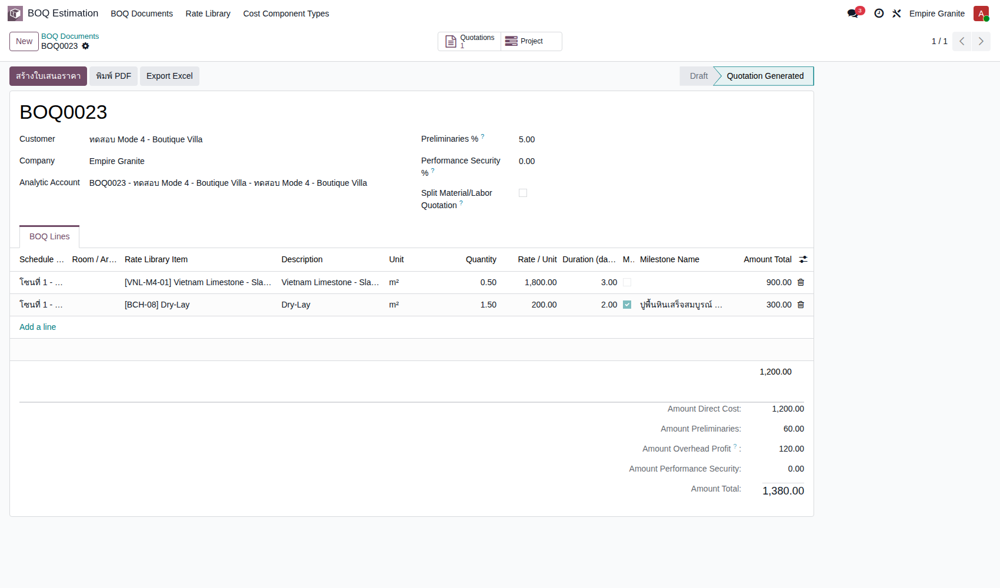
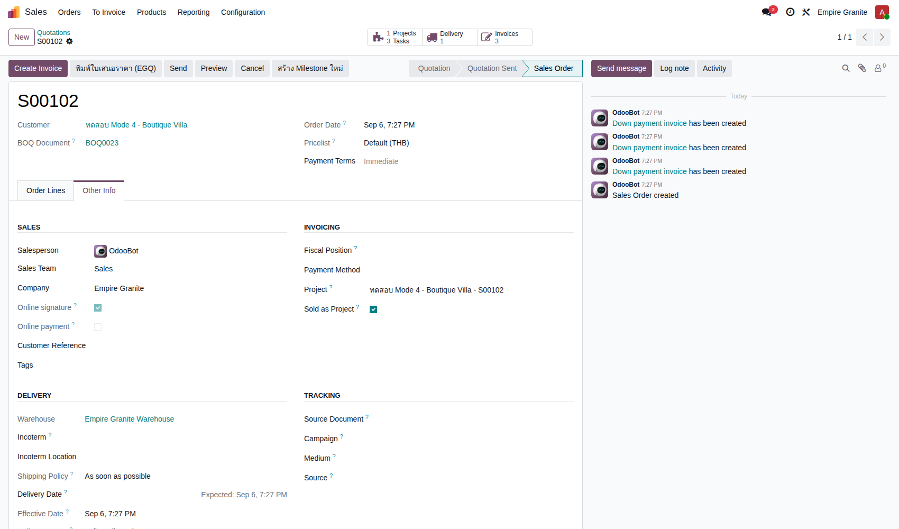
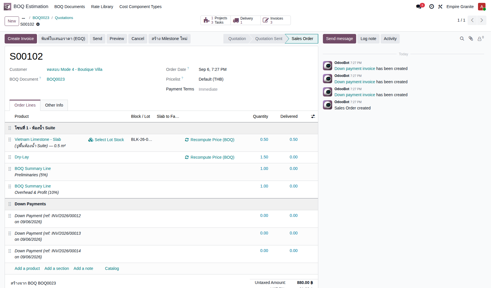
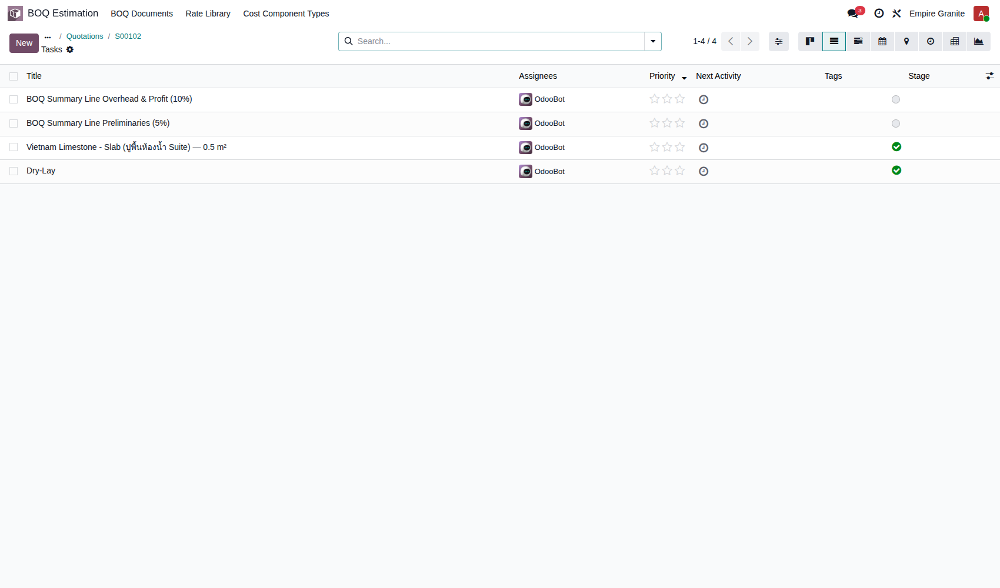
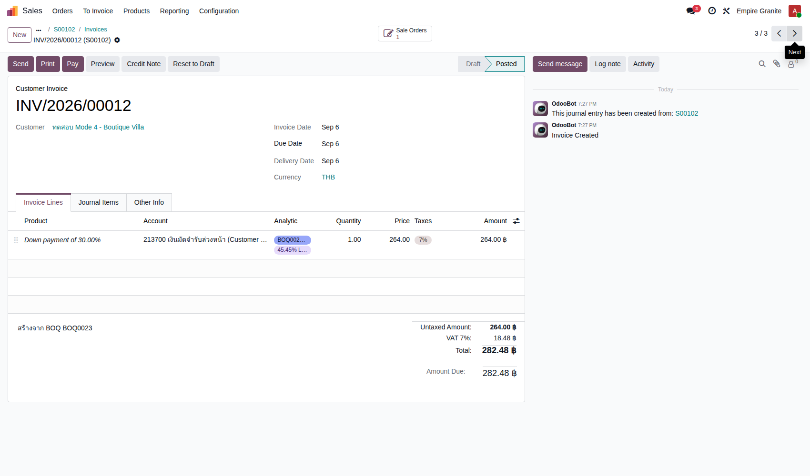
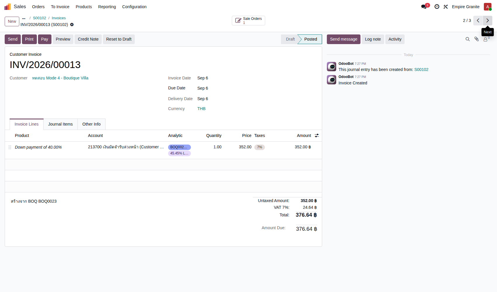
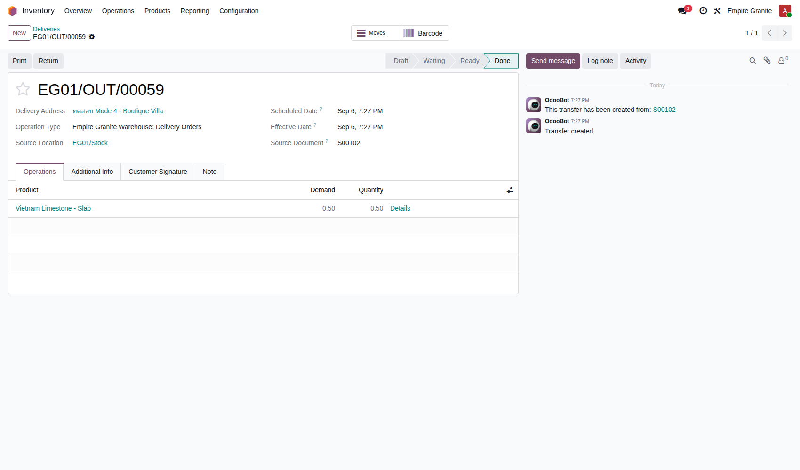
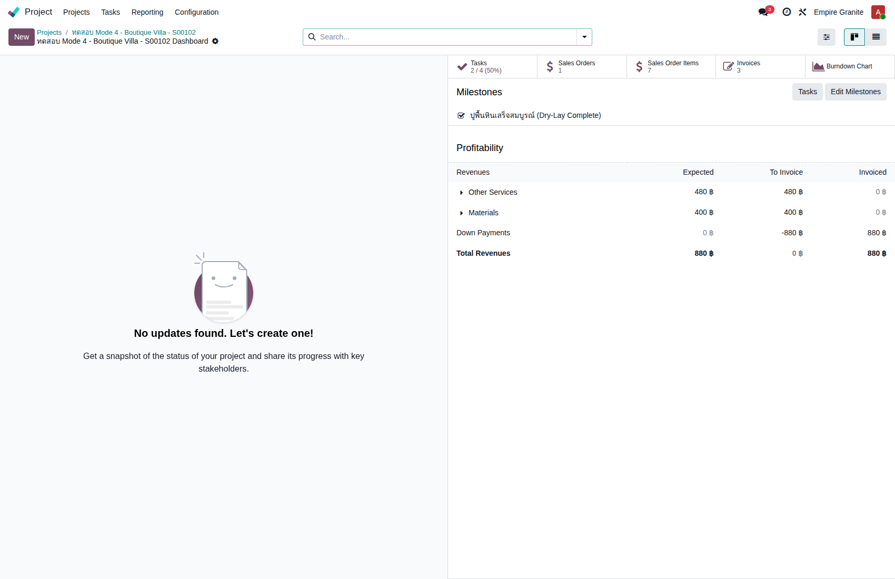
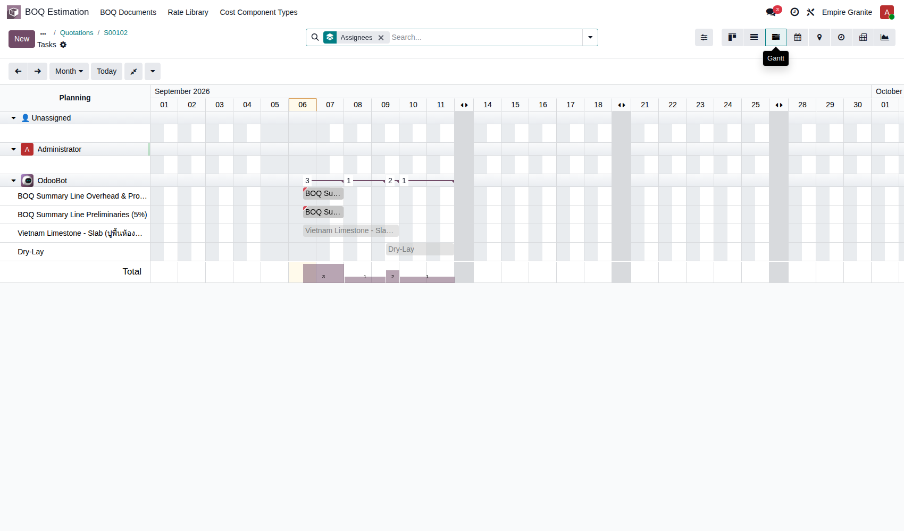
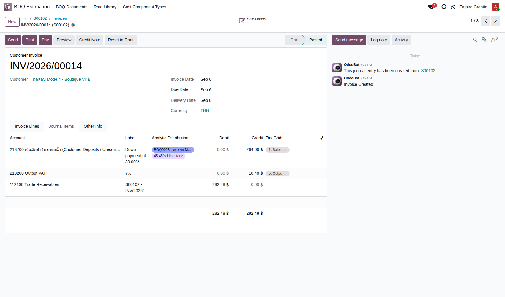

Empire Stone × Empire Granite — QA
Test Cases: E2E Flow — Mode 4 (Sold-as-Project)
เรื่องราวเดียวต่อเนื่องกันตั้งแต่ตั้งต้นจากเอกสาร BOQ ติ๊ก "Sold as Project" ยืนยันคำสั่งขายให้ระบบสร้าง Project + Task ให้อัตโนมัติ เรียกเก็บเงินแบบมัดจำ 3 งวด (30/40/30) ส่งมอบสินค้าจริง ปิดงานให้ Milestone ขึ้นสำเร็จ จนถึงตรวจสอบกำไรขาดทุนของโปรเจกต์และรายการบัญชี — ไม่ใช่การเทสฟีเจอร์แยกส่วน และไม่มีข้อไหนเป็นการดักฟิลด์บังคับ/error ทั่วไป เดินตามได้เองแม้ไม่ใช่ technical user ตัวเลข "ตัวอย่างจริง" มาจากการรันจริงที่ทำขึ้นเฉพาะสำหรับเอกสารนี้ ไม่ใช่ตัวเลขสมมติ — รวมถึง 3 ปัญหาจริงที่พบระหว่างทางซึ่งยังไม่ได้แก้ไข (ดูกล่องสีเหลืองใน TC-03 และ TC-09)
13Test Case ทั้งหมด
6หมวด
8High Priority
4Medium Priority
1Low Priority
F1. ตั้งต้นจาก BOQ — เข้าสู่โหมด Sold as Project
ADR-021 — เริ่มจากใบประมาณราคา (BOQ) ไม่ใช่พิมพ์ Sale Order เปล่าๆ · 2 test cases
| TC ID | Scenario | Precondition | Steps | ข้อมูลตัวอย่าง | Expected Result | Priority | ภาพหน้าจอ |
|---|---|---|---|---|---|---|---|
| TC-E2E-M4-01 | สร้างใบเสนอราคาจากเอกสาร BOQ ("Generate Quotation") | มีเอกสาร BOQ ที่กรอกรายการและราคาเรียบร้อยแล้ว (สถานะ Draft) |
|
BOQ0023 — ลูกค้า "ทดสอบ Mode 4 - Boutique Villa" 2 รายการ: Vietnam Limestone - Slab 0.5 ตร.ม. + Dry-Lay 1.5 ตร.ม. Preliminaries 5% + Overhead & Profit 10% |
สถานะ BOQ เปลี่ยนเป็น "Quotation Generated" เกิด Sale Order ใหม่ 1 ใบอัตโนมัติ ดึงทุกรายการ + ค่า Preliminaries/Overhead มาเป็นบรรทัดในใบเสนอราคาให้ครบ — ตัวอย่างจริง: BOQ0023 (รวม 1,380.00 บาท ก่อน VAT) → SO S00102 | High |  |
| TC-E2E-M4-02 | ติ๊กกล่อง "Sold as Project" บนใบเสนอราคา | ทำ TC-E2E-M4-01 เสร็จแล้ว (มี SO ที่ยังไม่ Confirm) |
|
- | กล่อง "Sold as Project" ติ๊กเรียบร้อย (ยังไม่ต้องกด Confirm ตอนนี้) — เมื่อ Confirm ในขั้นถัดไป ระบบจะสร้าง Project ให้อัตโนมัติจากช่องนี้ | High |  |
F2. เตรียมสต็อกหิน + ยืนยันคำสั่งขาย
เลือกสต็อกจริงให้บรรทัดหิน แล้วยืนยัน SO ให้ระบบสร้าง Project+Task ให้อัตโนมัติ · 3 test cases
| TC ID | Scenario | Precondition | Steps | ข้อมูลตัวอย่าง | Expected Result | Priority | ภาพหน้าจอ |
|---|---|---|---|---|---|---|---|
| TC-E2E-M4-03 | เลือกสต็อกจริงให้บรรทัดสินค้าหิน ("Select Lot Stock") 🔴 พบปัญหาจริง (ยังไม่แก้): (1) ช่องแสดงสต็อกคงเหลือของ Lot นี้ขึ้นแค่ 0.54 ตร.ม. ทั้งที่ของจริงมี 2.34 ตร.ม. อยู่หน้าคลัง (2) หลังกดยืนยันจำนวนแล้ว ราคาต่อหน่วยของบรรทัดจะเปลี่ยนจากราคาที่ BOQ ตั้งไว้ (900 บาท) เป็นราคาป้ายสินค้าปกติคูณจำนวนใหม่ (400 บาท) โดยไม่มีคำเตือนใดๆ — เป็นบั๊กจริงของระบบ ไม่ใช่ขั้นตอนที่ตั้งใจให้เป็นแบบนี้ ผู้ใช้ควรตรวจราคาทุกครั้งหลังทำขั้นนี้ |
ทำ TC-E2E-M4-02 เสร็จแล้ว บรรทัดสินค้าหินยังไม่ได้ผูกกับสต็อกจริง |
|
Lot = BLK-26-0004 จำนวน = 0.5 ตร.ม. |
บรรทัดผูกกับ Lot ที่เลือกสำเร็จ จำนวนเปลี่ยนเป็น 0.5 ตร.ม. ตามที่กรอก — ตัวอย่างจริง: ราคาต่อหน่วยเปลี่ยนจาก 900.00 เป็น 800.00×0.5 = 400.00 บาท (ดูหมายเหตุด้านซ้าย) | High |  |
| TC-E2E-M4-04 | ยืนยัน (Confirm) Sale Order — ระบบสร้าง Project ให้อัตโนมัติ | ทำ TC-E2E-M4-03 เสร็จแล้ว |
|
- | SO เปลี่ยนสถานะเป็น "Sales Order" เกิดปุ่ม/สถิติใหม่มุมบน: "Projects 1", "Tasks", "Delivery 1", "Invoices" — ไม่ต้องสร้าง Project เองแยกต่างหาก — ตัวอย่างจริง: S00102 (ยอดรวมหลังปรับราคาจาก TC-03 = 941.60 บาท รวม VAT) → Project id 38 | High | |
| TC-E2E-M4-05 | ตรวจสอบ Task ที่ระบบสร้างให้อัตโนมัติใน Project หมายเหตุ: แต่ละบรรทัดใน SO (รวมถึงบรรทัด Preliminaries/Overhead & Profit ที่เป็นแค่ตัวเลขสรุป ไม่ใช่งานจริง) จะได้ Task ของตัวเอง 1 งานเสมอ — เป็นพฤติกรรมที่ทราบอยู่แล้ว (ยังไม่กรองออก) ไม่ใช่ error หากเห็น Task ชื่อ "BOQ Summary Line Preliminaries/Overhead & Profit" ปนอยู่กับงานจริง |
ทำ TC-E2E-M4-04 เสร็จแล้ว |
|
- | เห็น Task ครบ 1 งานต่อ 1 บรรทัดสินค้า/บริการ — ตัวอย่างจริง: 4 Tasks ("Vietnam Limestone - Slab...", "Dry-Lay", "BOQ Summary Line Preliminaries (5%)", "BOQ Summary Line Overhead & Profit (10%)") | Medium |  |
F3. เรียกเก็บเงินแบบ Down Payment 30/40/30
ออกใบแจ้งหนี้มัดจำ 3 งวดด้วยมือ (ไม่ใช่ระบบตัดให้อัตโนมัติ) · 3 test cases
| TC ID | Scenario | Precondition | Steps | ข้อมูลตัวอย่าง | Expected Result | Priority | ภาพหน้าจอ |
|---|---|---|---|---|---|---|---|
| TC-E2E-M4-06 | สร้างใบแจ้งหนี้มัดจำงวดที่ 1 (Down Payment 30%) | ทำ TC-E2E-M4-04 เสร็จแล้ว |
|
Down Payment = 30% | ใบแจ้งหนี้สถานะ Posted ยอด 30% ของยอดรวม SO — ตัวอย่างจริง: INV/2026/00012 (282.48 บาท จาก 941.60 × 30%) | High |  |
| TC-E2E-M4-07 | สร้างใบแจ้งหนี้มัดจำงวดที่ 2 (Down Payment 40%) | ทำ TC-E2E-M4-06 เสร็จแล้ว |
|
Down Payment = 40% | ใบแจ้งหนี้สถานะ Posted ยอด 40% ของยอดรวม SO — ตัวอย่างจริง: INV/2026/00013 (376.64 บาท จาก 941.60 × 40%) | High |  |
| TC-E2E-M4-08 | สร้างใบแจ้งหนี้มัดจำงวดสุดท้าย (Down Payment 30% ปิดยอด) | ทำ TC-E2E-M4-07 เสร็จแล้ว |
|
Down Payment = 30% | ใบแจ้งหนี้สถานะ Posted ยอดงวดสุดท้าย รวม 3 ใบแล้วเท่ากับยอด SO เป๊ะ — ตัวอย่างจริง: INV/2026/00014 (282.48 บาท) รวม 3 ใบ = 282.48 + 376.64 + 282.48 = 941.60 บาท ตรงกับยอด SO พอดี | High |
F4. ส่งมอบสินค้าจริง
บรรทัดสินค้าหินยังต้องเดินตามขั้นตอนส่งมอบปกติของโหมดนั้นๆ (ที่นี่คือ Mode 2 Lot) · 1 test case
| TC ID | Scenario | Precondition | Steps | ข้อมูลตัวอย่าง | Expected Result | Priority | ภาพหน้าจอ |
|---|---|---|---|---|---|---|---|
| TC-E2E-M4-09 | ส่งมอบสินค้า (Delivery) ให้ลูกค้า 🔴 พบปัญหาจริง (ยังไม่แก้): ระบบดึงสต็อกจากจุดพัก "Stone Hold" เสมอสำหรับสินค้าโหมด Lot ทั้งที่โหมดนี้ไม่เคยมีขั้นตอนย้ายของจริงไปที่จุดพักนั้นเลย (ต่างจาก Serial/Cut-to-Order) ผลคือยอดคงเหลือที่จุดพักนั้นติดลบเพิ่มขึ้นเรื่อยๆ ทุกครั้งที่ส่งของ (จาก -1.8 เป็น -2.3 ตร.ม.ในรอบนี้) แม้ของจริงจะยังอยู่ครบที่หน้าคลัง — ใบส่งของยังคง Validate ผ่านได้ตามปกติ ไม่กระทบขั้นตอนที่ผู้ใช้เห็น |
ทำ TC-E2E-M4-08 เสร็จแล้ว มีใบส่งของอัตโนมัติรออยู่ตั้งแต่ตอน Confirm |
|
- | ใบส่งของเปลี่ยนสถานะเป็น Done — ตัวอย่างจริง: EG01/OUT/00059 (Vietnam Limestone - Slab 0.5 ตร.ม.) | High |  |
F5. ติดตามงานผ่าน Task และ Milestone
ปิดงานจริง ระบบขึ้น Milestone ให้อัตโนมัติ + ดู Gantt Chart ของทั้งโปรเจกต์ · 2 test cases
| TC ID | Scenario | Precondition | Steps | ข้อมูลตัวอย่าง | Expected Result | Priority | ภาพหน้าจอ |
|---|---|---|---|---|---|---|---|
| TC-E2E-M4-10 | ทำ Task งานจริงให้เสร็จ (Mark as Done) — Milestone ขึ้นสถานะสำเร็จให้อัตโนมัติ | ทำ TC-E2E-M4-09 เสร็จแล้ว มี Task ที่ตั้ง Milestone ไว้ล่วงหน้าตอนสร้าง BOQ (บรรทัด Dry-Lay) |
|
- | Task ขึ้นเครื่องหมายเสร็จ และ Milestone ที่ผูกกับ Task นั้นเปลี่ยนเป็น "Reached" ให้อัตโนมัติ โดยไม่ต้องไปกดยืนยัน Milestone แยกต่างหาก — ตัวอย่างจริง: Milestone "ปูพื้นหินเสร็จสมบูรณ์ (Dry-Lay Complete)" ขึ้นเครื่องหมายถูกในหน้า Project Dashboard ทันที | Medium |  |
| TC-E2E-M4-11 | เปิดดู Gantt Chart ของทั้งโปรเจกต์ | ทำ TC-E2E-M4-05 เสร็จแล้ว (มี Task พร้อมวันที่วางแผนแล้ว) |
|
- | เห็นแท่ง Gantt ของแต่ละ Task เรียงตามวันที่วางแผน (จากช่อง Duration ที่กรอกไว้ตอนสร้าง BOQ) กลุ่มตามผู้รับผิดชอบ — Task ที่ทำเสร็จแล้วแสดงเป็นแท่งสีเทาจาง | Low |  |
F6. ตรวจสอบบัญชี — Project P&L และ Journal Items
ยืนยันว่ารายได้ที่ผูก Analytic Account ของโปรเจกต์ถูกต้อง และใบแจ้งหนี้แต่ละใบลงบัญชีสมดุล · 2 test cases
| TC ID | Scenario | Precondition | Steps | ข้อมูลตัวอย่าง | Expected Result | Priority | ภาพหน้าจอ |
|---|---|---|---|---|---|---|---|
| TC-E2E-M4-12 | ตรวจสอบกำไรขาดทุนของโปรเจกต์ (Project P&L) บน Dashboard | ทำ TC-E2E-M4-08 เสร็จแล้ว (ออกใบแจ้งหนี้ครบ 3 งวด) |
|
- | เห็นยอดรายได้แยกตามหมวด (Materials / Other Services / Down Payments) รวมกันแล้วต้องเท่ากับยอดใบแจ้งหนี้ทั้งหมด (ไม่รวม VAT) — ตัวอย่างจริง: Other Services 480 + Materials 400 = Total Revenues 880 บาท ตรงกับยอด Invoiced 880 บาททั้งหมด (ออกครบ 3 งวดแล้ว จึง Expected = Invoiced พอดี ไม่มียอดค้าง "To Invoice") | Medium | |
| TC-E2E-M4-13 | ตรวจรายการบัญชีของใบแจ้งหนี้แต่ละงวด (Journal Items) | ทำ TC-E2E-M4-08 เสร็จแล้ว |
|
- | เดบิต/เครดิตสมดุลกัน (รวมเท่ากันทั้ง 2 ฝั่ง) เห็น Analytic Distribution ผูกกับบัญชี Analytic ของโปรเจกต์นี้บนบรรทัดรายได้ — ตัวอย่างจริง: INV/2026/00014 เดบิต Trade Receivables 282.48 = เครดิต Down Payment 264.00 + Output VAT 18.48 พอดี พร้อมป้าย Analytic "BOQ0023 - ทดสอบ Mode 4..." | Medium |  |